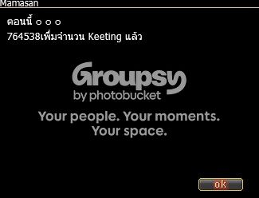
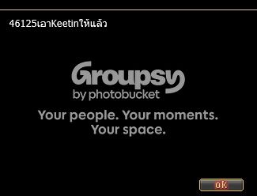
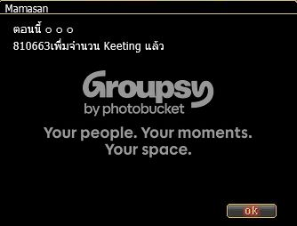

ก่อนส่ง 764538


ส่งไป 46125


หลังส่ง 810663


http://eco.froztic.in.th/archive/ecofanclub/
http://eco.froztic.in.th/archive/ecofanclub/viewtopic.php?f=25&t=35172

 ...
...
 อ๋อ..โกเลมชื่อtaye เราก็เคยขายkeetinให้ค่ะ เพราะเห็นว่าจะไปสมทบนะเนี่ย
อ๋อ..โกเลมชื่อtaye เราก็เคยขายkeetinให้ค่ะ เพราะเห็นว่าจะไปสมทบนะเนี่ย )
)